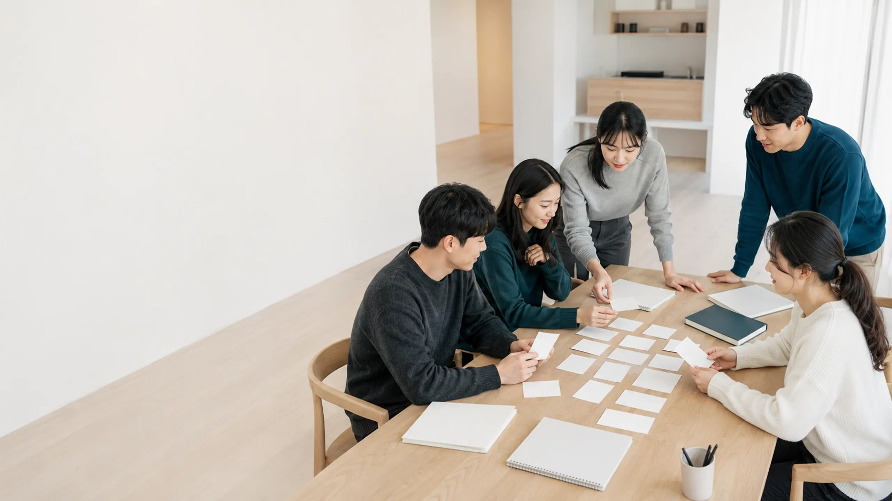
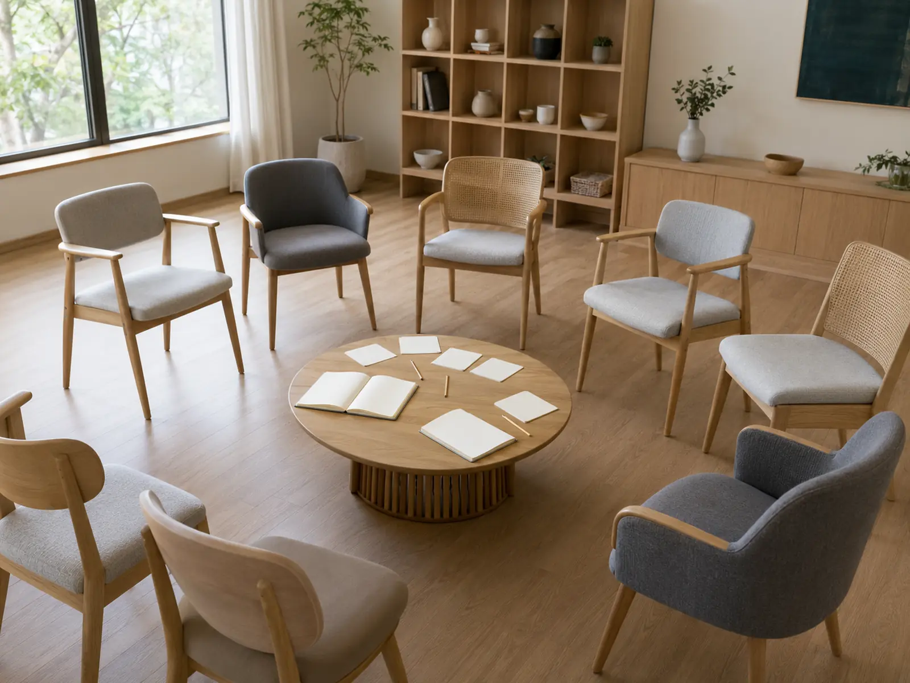
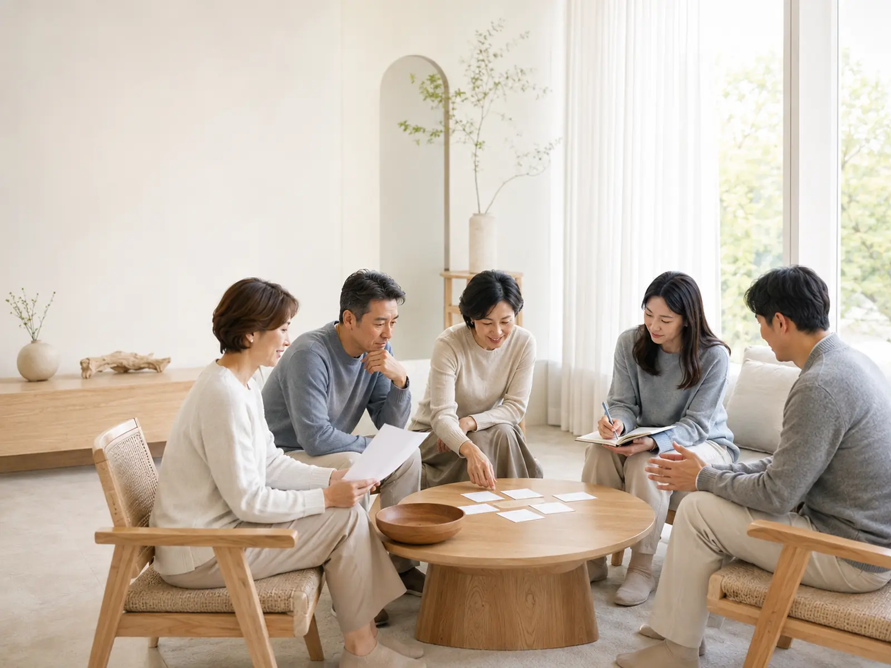

입문·기초 과정
4개월나와 삶을 이해하는
기본 관점을 세웁니다.
MONTH 01 — 04

L&C PROGRAM
만 18세 이상이라면 누구나 참여할 수 있습니다.
L&C의 프로그램을 통해 나를 돌아보고, 사람들과 연결되며
새로운 변화를 경험해보세요.
PROGRAM INTRODUCTION
L&C의 프로그램은 지식을 듣는 것에서 끝나지 않습니다.
인문학적 관점에서 삶과 인간에 대한 다양한 텍스트와 사상을 탐구하며, 자신의 생각과 삶을 돌아보고 다른 사람의 이야기를 들으며, 함께 나누고 참여하는 과정을 통해 일상에 필요한 변화를 만들어갑니다.
처음 참여하는 사람도 부담 없이 함께할 수 있도록 쉽고 편안한 방식으로 진행하며, 각 프로그램의 주제와 목적에 따라 다양한 활동과 경험을 제공합니다.

LEARNING JOURNEY
배운 내용을 이해하는 데서 끝내지 않고,
자신의 삶과 관계에 연결하도록 구성된 8개월의 과정입니다.
나와 삶을 이해하는
기본 관점을 세웁니다.
MONTH 01 — 04
배운 내용을 관계와
일상으로 확장합니다.
MONTH 05 — 08
배운 내용을 이해하는 데서 끝내지 않고,
자신의 삶과 관계에 연결합니다.
COURSE STRUCTURE
프로그램의 시작과 배움의 기반을 만드는 4개월 과정입니다.
입문·기초 과정에서 시작한 배움을 더 깊게 이어가는 4개월 과정입니다.

HOW WE LEARN
L&C는 모든 참여자가 자신의 방식으로 생각하고 표현할 수 있는 환경을 중요하게 생각합니다.
프로그램의 주제에 따라 이야기, 활동, 실습, 나눔 등 다양한 방식으로 진행하며, 참여자가 부담 없이 과정에 함께할 수 있도록 돕습니다.
프로그램의 주제와 내용을 쉽고 명확하게 이해합니다.
질문과 활동을 통해 자신의 생각을 직접 발견합니다.
서로의 경험과 생각을 존중하며 이야기를 나눕니다.
발견한 내용을 자신의 삶과 관계에 연결합니다.
BEGIN WITH L&C
L&C의 프로그램을 통해 나를 이해하고,
사람들과 연결되는 새로운 경험을 만나보세요.